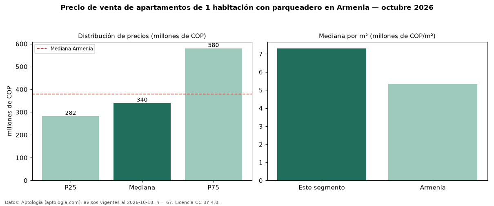

Precio de venta de apartamentos de 1 habitación con parqueadero en Armenia — octubre 2026
COP 340 millones es el precio mediano de apartamentos de 1 habitación con parqueadero en venta en Armenia (n = 67 avisos). Eso es 3 % más que la mediana de los apartamentos de 1 habitación en venta de Armenia (COP 329 millones, n = 85); este segmento reúne el 79 % de esos avisos. Por metro cuadrado, la mediana es COP 7,31 millones/m² (n = 65), 0 % por encima de los apartamentos de 1 habitación en venta de Armenia (COP 7,31 millones/m²). El área mediana anunciada es 51 m². La administración mediana declarada es COP 338.000 al mes (n = 40). La mitad central de los avisos va de COP 282 millones a COP 580 millones (razón 2,1), una dispersión alta. El estrato más frecuente es 5 (58 % de los avisos con estrato). La mediana de todos los apartamentos en venta de Armenia es COP 380 millones (−11 % de diferencia). Datos: Aptología (aptologia.com), CC BY 4.0 — https://www.aptologia.com/venta/armenia. Archivos: PDF, CSV con las cifras y gráfica PNG.

| Avisos únicos | 67 |
|---|---|
| Percentil 25 | COP 282.500.000 |
| Mediana | COP 340.000.000 |
| Percentil 75 | COP 580.000.000 |
| Mediana por m² | COP 7.307.692 |
Fuente: avisos vigentes de portales inmobiliarios recopilados por Aptología, deduplicados (mínimo 30 avisos únicos por celda). Precios pedidos, no cerrados. Fecha: 2026-10-18.